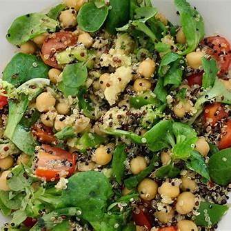

Cocina las lentejas según las indicaciones del paquete.
Sofríe la cebolla y el ajo en aceite de coco.
Añade la pasta de curry y cocina por 2 minutos.
Agrega las lentejas cocidas y la leche de coco. Cocina por 10 minutos más.
Añade las espinacas y deja que se marchiten.
Sirve el curry sobre arroz basmati.
¡Y listo! Tu curry de lentejas rojas está listo para disfrutar.
Ensalada de quinoa con garbanzos

Ingredientes:
1 taza de quinoa
1 ½ taza de agua
1 lata de garbanzos cocidos (400g)
1 aguacate maduro (en cubos)
1 pepino (en rodajas)
1 zanahoria (rallada)
1 pimiento rojo (en cubos)
1 puñado de espinacas frescas
2 cucharadas de semillas de sésamo tostado (opcional)
Instrucciones:
Enjuaga la quinoa bajo agua fría.
En una cacerola, combina la quinoa y el agua. Lleva a ebullición, reduce el fuego y cocina a fuego lento durante 15 minutos, o hasta que la quinoa haya absorbido toda el agua.
Deja enfriar.
En un tazón grande, mezcla la quinoa cocida, los garbanzos, el aguacate, el pepino, la zanahoria rallada, el pimiento rojo y las espinacas.
En un frasco pequeño, mezcla el aceite de oliva, el jugo de limón, la mostaza, el ajo picado, la sal y la pimienta. Agita bien hasta que todo esté combinado.
Vierte el aderezo sobre la ensalada y mezcla todo suavemente para que los ingredientes se impregnen bien.
Espolvorea las semillas de sésamo tostado por encima (si las usas).
Sirve la ensalada fría o a temperatura ambiente. ¡Es un plato refrescante y lleno de proteínas!
¡Y listo! Puedes agregar frutos secos como almendras o nueces para darle un toque crujiente.